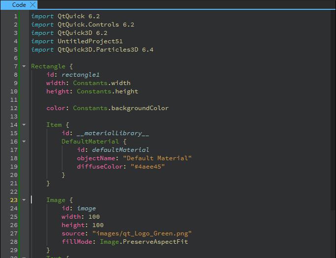

Code
In the Code view, you can view and modify the code in a UI file (.ui.qml) or component file (.qml) that is generated when you create components in the 2D or 3D view and specify their properties in Properties.

You can also view and modify other types of text files.
To open the search dialog in the Code view, go to Edit > Find/Replace > Find/Replace. You can also select Ctrl + F.
The view offers the following features: